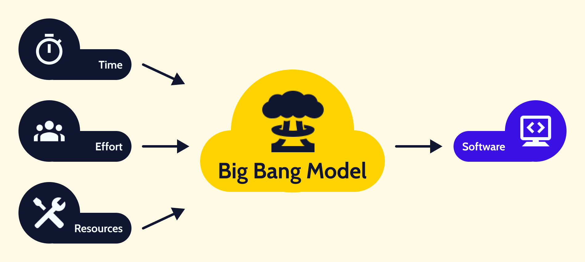

Big Bang mudel on tarkvaraarenduse protsessimudel, kus ei järgita kindlat protsessi ega planeerimist. Arendus algab ainult vajalike ressursside, nagu raha ja aeg, olemasolul. Tulemus on tarkvara, mis võib või ei pruugi vastata kliendi ootustele. Seda mudelit kasutatakse tavaliselt väikeste projektide puhul, kus arendajate meeskonnad on väikesed.
Big Bang mudel keskendub ressursside maksimaalsele rakendamisele tarkvara arenduses ja kodeerimises. Planeerimine on minimaalne või puudub täielikult. Nõuded selgitatakse ja rakendatakse jooksvalt, sageli ilma põhjaliku analüüsita. Muudatused nõuetes võivad kaasa tuua kogu projekti ümbertegemise.
See mudel sobib väikestele projektidele, kus töötab üks või kaks arendajat. Samuti kasutatakse seda akadeemilistes ja praktikaprojektides. Mudel sobib hästi olukordades, kus nõuded ei ole selged ja lõplik tähtaeg puudub.

| Head | Vead |
|---|---|
| Väga lihtne mudel | Väga kõrge risk ja ebakindlus |
| Planeerimist on väga vähe või pole üldse vaja | Ei sobi keerukate ja objektorienteeritud projektide jaoks |
| Lihtne hallata | Ei sobi pikaajaliste ja pidevalt arendatavate projektide jaoks |
| Nõuab väga vähe ressursse | Võib osutuda kalliks, kui nõuded on valesti mõistetud |
| Pakub arendajatele paindlikkust | Suure tõenäosusega ei vasta lõpptoode kliendi ootustele |
| Hea õppevahend uutele arendajatele |